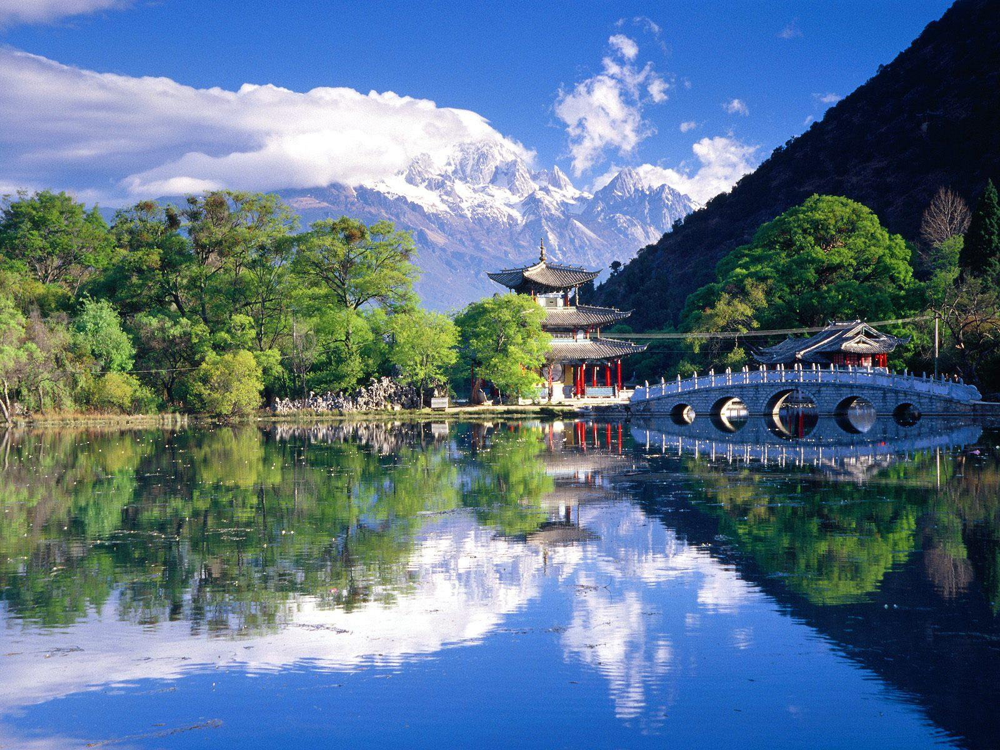
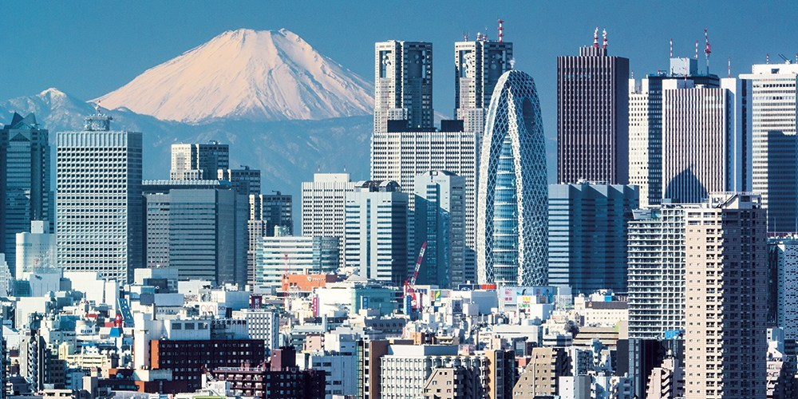

Pendahuluan

Jepang (Jepang: 日本 Nippon atau Nihon; nama resmi: 日本国 Tentang suara ini Nipponkoku atau Nihonkoku, nama harfiah: "Negara Jepang") adalah sebuah negara kepulauan di Asia Timur. Letaknya di ujung barat Samudra Pasifik, di sebelah timur Laut Jepang, dan bertetangga dengan Republik Rakyat Tiongkok, Korea, dan Rusia.
Pulau-pulau paling utara berada di Laut Okhotsk, dan wilayah paling selatan berupa kelompok pulau-pulau kecil di Laut Tiongkok Timur, tepatnya di sebelah selatan Okinawa yang bertetangga dengan Taiwan.
Jepang terdiri dari 6.852 pulau dan menjadikannya sebagai negara kepulauan. Pulau-pulau utama dari utara ke selatan adalah Hokkaido, Honshu (pulau terbesar), Shikoku, dan Kyushu. Sekitar 97% wilayah daratan Jepang berada di keempat pulau terbesarnya. Sebagian besar pulau di Jepang bergunung-gunung, dan sebagian di antaranya merupakan gunung berapi.
Gunung tertinggi di Jepang adalah Gunung Fuji yang merupakan sebuah gunung berapi. Penduduk Jepang berjumlah 128 juta orang, dan berada di peringkat ke-10
negara berpenduduk terbanyak di dunia. Tokyo secara de facto adalah ibu kota Jepang, dan berkedudukan sebagai sebuah prefektur. Tokyo Raya adalah sebutan untuk Tokyo dan beberapa kota yang berada di prefektur sekelilingnya. Sebagai daerah metropolitan terluas di dunia, Tokyo Raya berpenduduk lebih dari 30 juta orang.
Menurut mitologi tradisional, Jepang didirikan oleh Kaisar Jimmu pada abad ke-7 SM. Kaisar Jimmu memulai mata rantai monarki Jepang yang tidak terputus hingga kini. Meskipun begitu, sepanjang sejarahnya, untuk kebanyakan masa kekuatan sebenarnya berada di tangan anggota-anggota istana, shogun, pihak militer,
dan memasuki zaman modern, di tangan perdana menteri. Menurut Konstitusi Jepang tahun 1947, Jepang adalah negara monarki konstitusional di bawah pimpinan Kaisar Jepang dan Parlemen Jepang.
Sebagai negara maju di bidang ekonomi,Jepang memiliki produk domestik bruto terbesar nomor dua setelah Amerika Serikat, dan masuk dalam urutan tiga besar dalam keseimbangan kemampuan berbelanja. Jepang adalah anggota Perserikatan Bangsa-Bangsa, G8, OECD, dan APEC.
Jepang memiliki kekuatan militer yang memadai lengkap dengan sistem pertahanan modern seperti AEGIS serta skuat armada besar kapal perusak. Dalam perdagangan luar negeri, Jepang berada di peringkat ke-4 negara pengekspor terbesar dan peringkat ke-6 negara pengimpor terbesar di dunia.
Sebagai negara maju, penduduk Jepang memiliki standar hidup yang tinggi (peringkat ke-8 dalam Indeks Pembangunan Manusia) dan angka harapan hidup tertinggi di dunia menurut perkiraan PBB.
Dalam bidang teknologi, Jepang adalah negara maju di bidang telekomunikasi, permesinan, dan robotika.
Anda Menekan Gambar Diatas Sebanyak 0 Kali
Geografi

Jepang memiliki lebih dari 3.000 pulau yang terletak di pesisir Lautan Pasifik di timur benua Asia. Istilah Kepulauan Jepang merujuk kepada empat pulau besar, dari utara ke selatan, Hokkaido, Honshu, Shikoku, dan Kyushu, serta Kepulauan Ryukyu yang berada di selatan Kyushu.
Sekitar 70% hingga 80% dari wilayah Jepang terdiri dari pegunungan yang berhutan-hutan,dan cocok untuk pertanian, industri, serta permukiman. Daerah yang curam berbahaya untuk dihuni karena risiko tanah longsor akibat gempa bumi, kondisi tanah yang lunak, dan hujan lebat.
Oleh karena itu, permukiman penduduk terpusat di kawasan pesisir. Jepang termasuk salah satu negara berpenduduk terpadat di dunia.
Gempa bumi berkekuatan rendah dan sesekali letusan gunung berapi sering dialami Jepang karena letaknya di atas Lingkaran Api Pasifik di pertemuan tiga lempeng tektonik. Gempa bumi yang merusak sering menyebabkan tsunami. Setiap abadnya, di Jepang terjadi beberapa kali tsunami.
Gempa bumi besar yang terjadi akhir-akhir ini di Jepang adalah Gempa bumi Chūetsu 2004 dan Gempa bumi besar Hanshin tahun 1995. Keadaan geografi menyebabkan Jepang memiliki banyak sumber mata air panas, dan sebagian besar di antaranya telah dibangun sebagai daerah tujuan wisata.
Jepang berada di kawasan beriklim sedang dengan pembagian empat musim yang jelas. Walaupun demikian, terdapat perbedaan iklim yang mencolok antara wilayah bagian utara dan wilayah bagian selatan.Pada musim dingin, Jepang bagian utara seperti Hokkaido mengalami musim salju, namun sebaliknya wilayah Jepang bagian selatan beriklim subtropis.
Iklim juga dipengaruhi tiupan angin musim yang bertiup dari benua Asia ke Lautan Pasifik pada musim dingin, dan sebaliknya pada musim panas.
Iklim Jepang terbagi atas enam zona iklim:
1. Hokkaido: Kawasan paling utara beriklim sedang dengan musim dingin yang panjang dan membekukan, serta musim panas yang sejuk. Presipitasi tidak besar, namun salju banyak turun ketika musim dingin.
2. Laut Jepang: Di pantai barat Pulau Honshu, tiupan angin dari barat laut membawa salju yang sangat lebat. Pada musim panas, kawasan ini lebih sejuk dibandingkan kawasan Pasifik. Walaupun demikian, suhu di kawasan ini kadang kala dapat menjadi sangat tinggi akibat fenomena angin fohn.
3. Dataran Tinggi Tengah: Wilayah ini beriklim pedalaman dengan perbedaan suhu rata-rata musim panas-musim dingin yang sangat mencolok. Perbedaan suhu antara malam hari dan siang hari juga sangat mencolok.
4. Laut Pedalaman Seto: Barisan pegunungan di wilayah Chugoku dan Shikoku menghalangi jalur tiupan angin musim, sehingga kawasan ini sepanjang tahun beriklim sedang.
5. Samudra Pasifik: Kawasan pesisir bagian timur Jepang mengalami musim dingin yang sangat dingin, namun tidak banyak turun salju. Sebaliknya, musim panas menjadi begitu lembap akibat tiupan angin musim dari tenggara.
6. Kepulauan Ryukyu: Kepulauan di barat daya Jepang termasuk Kepulauan Ryukyu beriklim subtropis, hangat sewaktu musim dingin dan suhu yang tinggi sepanjang musim panas. Presipitasi sangat tinggi, terutama selama musim hujan. Taifun sangat sering terjadi.
Suhu tertinggi yang pernah tercatat di Jepang adalah 40,9 °C (105,6 °F) pada 16 Agustus 2007.
Musim hujan dimulai lebih awal di Okinawa, yakni sejak awal Mei. Garis depan musim hujan bergerak ke utara, namun berakhir di Jepang utara sebelum mencapai Hokkaido. Di sebagian besar wilayah Honshu, awal musim hujan dimulai pertengahan Juni dan berlangsung selama enam minggu. Taifun sering terjadi sepanjang September dan Oktober.
Penyebabnya adalah tekanan tropis di garis khatulistiwa yang bergerak dari barat daya ke timur laut, dan sering membawa hujan yang sangat lebat.
Ekonomi

Sejak periode Meiji (1868-1912), Jepang mulai menganut ekonomhttpsi pasar bebas dan mengadopsi kapitalisme model Inggris dan Amerika Serikat. Sistem pendidikan Barat diterapkan di Jepang, dan ribuan orang Jepang dikirim ke Amerika Serikat dan Eropa untuk belajar. Lebih dari 3.000 orang Eropa dan Amerika didatangkan sebagai tenaga pengajar di Jepang.
Pada awal periode Meiji, pemerintah membangun jalan kereta api, jalan raya, dan memulai reformasi kepemilikan tanah.
Pemerintah membangun pabrik dan galangan kapal untuk dijual kepada swasta dengan harga murah. Sebagian dari perusahaan yang didirikan pada periode Meiji berkembang menjadi zaibatsu, dan beberapa di antaranya masih beroperasi hingga kini.
Pertumbuhan ekonomi riil dari tahun 1960-an hingga 1980-an sering disebut "keajaiban ekonomi Jepang", yakni rata-rata 10% pada tahun 1960-an, 5% pada tahun 1970-an, dan 4% pada tahun 1980-an.Dekade 1980-an merupakan masa keemasan ekspor otomotif dan barang elektronik ke Eropa dan Amerika Serikat sehingga terjadi surplus neraca perdagangan yang mengakibatkan konflik perdagangan.
Setelah ditandatanganinya Perjanjian Plaza 1985, dolar AS mengalami depresiasi terhadap yen.
Pada Februari 1987, tingkat diskonto resmi diturunkan hingga 2,5% agar produk manufaktur Jepang bisa kembali kompetitif setelah terjadi kemerosotan volume ekspor akibat menguatnya yen. Akibatnya, terjadi surplus likuiditas dan penciptaan uang dalam jumlah besar.
Spekulasi menyebabkan harga saham dan realestat terus meningkat, dan berakibat pada penggelembungan harga aset. Harga tanah terutama menjadi sangat tinggi akibat adanya "mitos tanah" bahwa harga tanah tidak akan jatuh.Ekonomi gelembung Jepang jatuh pada awal tahun 1990-an akibat kebijakan uang ketat yang dikeluarkan Bank of Japan pada 1989, dan kenaikan tingkat diskonto resmi menjadi 6%.
Pada 1990, pemerintah mengeluarkan sistem baru pajak penguasaan tanah dan bank diminta untuk membatasi pendanaan aset properti. Indeks rata-rata Nikkei dan harga tanah jatuh pada Desember 1989 dan musim gugur 1990.[34] Pertumbuhan ekonomi mengalami stagnasi pada 1990-an, dengan angka rata-rata pertumbuhan ekonomi riil hanya 1,7% sebagai akibat penanaman modal yang tidak efisien dan penggelembungan harga aset pada 1980-an.
Institusi keuangan menanggung kredit bermasalah karena telah mengeluarkan pinjaman uang dengan jaminan tanah atau saham. Usaha pemerintah mengembalikan pertumbuhan ekonomi hanya sedikit yang berhasil dan selanjutnya terhambat oleh kelesuan ekonomi global pada tahun 2000.
Jepang adalah perekonomian terbesar nomor dua di dunia setelah Amerika Serikat, Jepang bersama Jerman dan Korea Selatan adalah 3 negara yang pernah mencatatkan diri sebagai negara-negara dengan pertumbuhan ekonomi tercepat sepanjang sejarah dunia,dengan PDB nominal sekitar AS$4,5 triliun.
Perekonomian terbesar ke-3 di dunia setelah AS dan Republik Rakyat Tiongkok dalam keseimbangan kemampuan berbelanja.Industri utama Jepang adalah sektor perbankan, asuransi, realestat, bisnis eceran, transportasi, telekomunikasi, dan konstruksi.Jepang memiliki industri berteknologi tinggi di bidang otomotif, elektronik, mesin perkakas, baja dan logam non-besi, perkapalan, industri kimia, tekstil, dan pengolahan makanan.
Sebesar tiga perempat dari produk domestik bruto Jepang berasal dari sektor jasa. Distrik Minato Mirai 21 di Yokohama. Ekonomi Jepang sangat mengandalkan sektor jasa.
Hingga tahun 2001, jumlah angkatan kerja Jepang mencapai 67 juta orang.Tingkat pengangguran di Jepang sekitar 4%.
Pada tahun 2007, Jepang menempati urutan ke-19 dalam produktivitas tenaga kerja.Menurut indeks Big Mac, tenaga kerja di Jepang mendapat upah per jam terbesar di dunia. Toyota Motor, Mitsubishi UFJ Financial, Nintendo, NTT DoCoMo, Nippon Telegraph & Telephone, Canon, Matsushita Electric Industrial, Honda, Mitsubishi Corporation, dan Sumitomo Mitsui Financial adalah 10 besar perusahaan Jepang pada tahun 2008.
Sejumlah 326 perusahaan Jepang masuk ke dalam daftar Forbes Global 2000 atau 16,3% dari 2000 perusahaan publik terbesar di dunia (data tahun 2006).Bursa Saham Tokyo memiliki total kapitalisasi pasar terbesar nomor dua di dunia. Indeks dari 225 saham perusahaan besar yang diperdagangkan di Bursa Saham Tokyo disebut Nikkei 225.
Dalam Indeks Kemudahan Berbisnis, Jepang menempati peringkat ke-12, dan termasuk salah satu negara maju dengan birokrasi paling sederhana. Kapitalisme model Jepang memiliki sejumlah ciri khas. Keiretsu adalah grup usaha yang beranggotakan perusahaan yang saling memiliki kerja sama bisnis dan kepemilikan saham. Negosiasi upah (shuntō) berikut perbaikan kondisi kerja antara manajemen dan serikat buruh dilakukan setiap awal musim semi.
Budaya bisnis Jepang mengenal konsep-konsep lokal, seperti Sistem Nenkō, nemawashi, salaryman, dan office lady. Perusahaan di Jepang mengenal kenaikan pangkat berdasarkan senioritas dan jaminan pekerjaan seumur hidup.Kejatuhan ekonomi gelembung yang diikuti kebangkrutan besar-besaran dan pemutusan hubungan kerja menyebabkan jaminan pekerjaan seumur hidup mulai ditinggalkan.
Perusahaan Jepang dikenal dengan metode manajemen seperti The Toyota Way. Aktivisme pemegang saham sangat jarang.Dalam Indeks Kebebasan Ekonomi, Jepang menempati urutan ke-5 negara paling laissez-faire di antara 41 negara Asia Pasifik.[82]
Mobil hibrida Toyota Prius. Produk otomotif dan elektronik adalah komoditas ekspor unggulan Jepang.
Statistik Perdagangan
Total ekspor Jepang pada tahun 2005 adalah 4.210 dolar AS per kapita. Pasar ekspor terbesar Jepang tahun 2006 adalah Amerika Serikat 22,8%, Uni Eropa 14,5%, Tiongkok 14,3%, Korea Selatan 7,8%, Taiwan 6,8%, dan Hong Kong 5,6%.
Produk ekspor unggulan Jepang adalah alat transportasi, kendaraan bermotor, elektronik, mesin-mesin listrik, dan bahan kimia.Negara sumber impor terbesar bagi Jepang pada tahun 2006 adalah Tiongkok 20,5%, AS 12,0%, Uni Eropa 10,3%, Arab Saudi 6,4%, Uni Emirat Arab 5,5%, Australia 4,8%, Korea Selatan 4,7%, dan Indonesia 4,2%.
Impor utama Jepang adalah mesin-mesin dan perkakas, minyak bumi, bahan makanan, tekstil, dan bahan mentah untuk adalah negara pengimpor hasil laut terbesar di dunia (senilai AS$ 14 miliar).Jepang berada di peringkat ke-6 setelah RRT, Peru, Amerika Serikat, Indonesia, dan Chili, dengan total tangkapan ikan yang terus menurun sejak 1996.